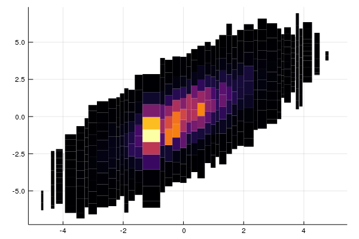

Plotting
StatsPlots
JuliaDB has all access to all the power and flexibility of Plots via StatsPlots and the @df macro.
using JuliaDB, StatsPlots
t = table((x = randn(100), y = randn(100)))
@df t scatter(:x, :y)
Plotting Big Data
For large datasets, it isn't feasible to render every data point. The OnlineStats package provides a number of data structures for big data visualization that can be created via the reduce and groupreduce functions.
- Example data:
using JuliaDB, Plots, OnlineStats
x = randn(10^6)
y = x + randn(10^6)
z = x .> 1
z2 = (x .+ y) .> 0
t = table((x=x, y=y, z=z, z2=z2))Table with 1000000 rows, 4 columns:
x y z z2
────────────────────────────────────
1.48494 2.19288 true true
1.23969 0.536499 true true
1.06159 1.42904 true true
0.176156 0.249636 false true
0.714251 -0.0450475 false true
-0.0682377 -1.35414 false false
0.05331 -0.823936 false false
1.86 1.45448 true true
0.855915 2.66493 false true
⋮
-1.75701 -0.285743 false false
0.356983 -0.459484 false false
-1.13729 -0.7288 false false
1.82383 2.88267 true true
-1.57593 -2.79145 false false
-1.93871 -0.447352 false false
-0.800527 -0.392614 false false
-0.384413 -2.00444 false falseMosaic Plots
A mosaic plot visualizes the bivariate distribution of two categorical variables.
o = reduce(Mosaic(Bool, Bool), t; select = (3, 4))
plot(o)
Histograms
grp = groupreduce(Hist(-5:.5:5), t, :z, select = :x)
plot(plot.(select(grp, 2))...; link=:all)
grp = groupreduce(KHist(20), t, :z, select = :x)
plot(plot.(select(grp, 2))...; link = :all)
Partition and IndexedPartition
Partition(stat, n)summarizes a univariate data stream.- The
statis fitted overnapproximately equal-sized pieces.
- The
IndexedPartition(T, stat, n)summarizes a bivariate data stream.- The
statis fitted overnpieces covering the domain of another variable of typeT.
- The
o = reduce(Partition(KHist(10), 50), t; select=:y)
plot(o)
o = reduce(IndexedPartition(Float64, KHist(10), 50), t; select=(:x, :y))
plot(o)
GroupBy
o = reduce(GroupBy{Bool}(KHist(20)), t; select = (:z, :x))
plot(o)
Convenience function for Partition and IndexedPartition
You can also use the partitionplot function, a slightly less verbose way of plotting Partition and IndexedPartition objects.
# x by itself
partitionplot(t, :x, stat = Extrema())
# y by x, grouped by z
partitionplot(t, :x, :y, stat = Extrema(), by = :z)